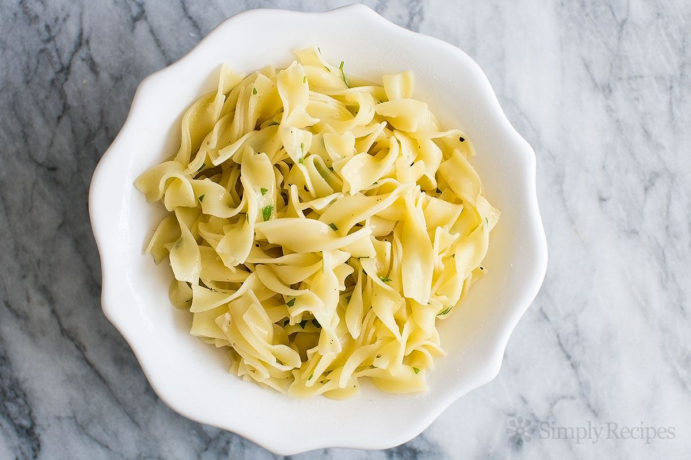

Odin Recipes

Description
warm cooked pasta that is mixed with melted butter, garlic, Parmesan cheese, and just a little bit of salt and black pepper. This simple dish is so incredibly delicious and takes just minutes to make.
Ingredients
- ¼ cup honey
- 1 (16 ounce) package fettuccine noodles
- 6 tablespoons butter, cut into piecess
- ⅓ cup grated Parmesan cheesel
- salt and ground black pepper to taste
Steps
- Fill a large pot with lightly salted water and bring to a rolling boil. Stir in fettuccine, bring back to a boil, and cook pasta over medium heat until tender yet firm to the bite, 8 to 10 minutes. Drain and return pasta to pot.
- Mix butter, Parmesan cheese, salt, and pepper into pasta until evenly combined.